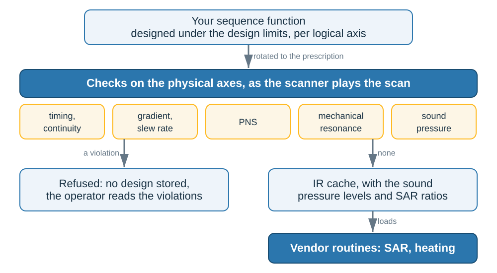
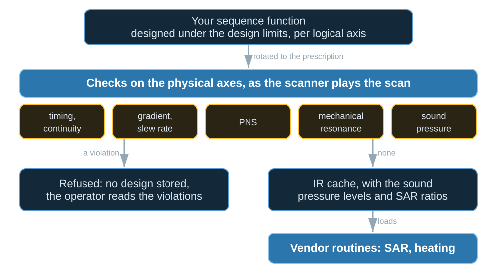

Safety checks#
TL;DR
Every design is checked on the physical gradient axes, rotated to the prescription, before it is stored.
All checks are mandatory on a scanner except sound pressure; a violation stores nothing.
SAR and heating run on the scanner, in the vendor’s routines; pulserver supplies their inputs.
Your sequence function designs a scan under per-axis limits, but on an oblique slice two logical axes add up on one physical gradient coil. pulserver checks the scan as it will play, with the limits the scanner sends, for generated and imported sequences alike. Lesson 3 of the Course runs the checks on a design that fails.
The checks compute estimates; passing them does not establish scanner or patient safety.
Capabilities#
Checks every file of a
NextSequencechain and refuses a violation, storing nothing.Code:
check(), called by the design calls. Tests: a design beyond the scanner limits is refused and stores nothing (test_design_service.py); an import beyond the scanner limits is refused (test_design_service.py).Rotates each file to the prescription, after each block’s own rotation, and leaves
NOROTblocks unrotated.Code:
check(rotation=...). Tests: a gradient within the limit on each logical axis can exceed it on a physical one; a block labelled NOROT is checked as it plays unrotated; a reflected prescription is checked as it plays; a rotation that is not orthonormal is refused (test_ir_checks.py).Designs under per-logical-axis limits and checks against the coil’s per-physical-axis limits.
Code:
design_max_grad,design_max_slewin the call’s limits. Test: an oblique design is held under the design limits and checked against the scanner’s (test_design_service.py).Checks that the file’s rasters and the scanner’s are integer multiples of each other.
Code:
check_raster_timesinsrc/cpp/ir/dedup.cpp, run byconvert(). Test: a file raster converts only as an integer multiple of the scanner’s (test_ir.py).Checks timing: gradient continuity, dead times and ringdown.
Code:
pypulseqpp.check_timing. Test: a dead time the file does not leave is a timing problem (test_ir.py).Checks gradient amplitude and slew rate on the physical axes.
Code:
pypulseqpp.safety.check_max_grad,check_max_slew. Test: limits without check limits check timing and gradients only (test_limits.py).Checks PNS under the scanner’s nerve model (chronaxie or SAFE), up to a fraction of its threshold.
Code:
CheckLimits(pns=..., pns_limit=...),pypulseqpp.safety.check_pns. Test: PNS is refused from the fraction of threshold the limits allow (test_ir_checks.py).Refuses gradient trains in the forbidden bands of mechanical resonance, on the physical axis they play on.
Code:
CheckLimits(bands=...),pypulseqpp.safety.check_mech_resonance. Tests: a gradient train in a forbidden band is refused on the axis it plays (test_ir_checks.py); the prescription moves a train into the forbidden band of another axis (test_ir_checks.py).Holds the loudest repetition to 140 dB peak and 99 dB(A) average (IEC 60601-2-33), and writes both levels into the cache.
Code:
CheckLimits(acoustic=...),spl_levels(),SplLevels. Tests: a repetition too loud on the physical axis it plays on is refused (test_ir_checks.py); the levels the cache carries are those the check holds to its limits (test_ir_checks.py).For pTx, computes SAR ratios from the VOPs and writes them into the cache for the vendor’s SAR routine.
Code:
sar_ratios(),SarRatio. Tests: a repetition’s SAR is measured against the same repetition of reference pulses (test_ir_checks.py); the checks apply no SAR limit; the reference pulse is played in the default shim; the file’s safety factor raises the local ratio and not the global (test_ir_checks.py).Refuses a VOP file made for a transmit configuration other than the one the scanner reports.
Code:
CheckLimits(vop_coil=...). Tests: the VOP file must name the transmit configuration the scanner reports (test_ir_checks.py); a design is made under the VOPs of the exam’s transmit coil (test_console.py).Writes the sequence’s request for SAR burst limits into the cache, where the scanner reads it.
Code:
EnableSarBurstModedefinition. Test: a scan asking for SAR burst limits says so in its cache (test_ir_repetition.py).Makes the limits and the VOP file part of the design’s identity.
Code:
design_identity(). Test: a design is one of the VOP file contents its SAR ratios came from (test_design_service.py).
Division of responsibility#
SAR, RF coil heating and gradient heating, in the vendor’s routines, from the RF pulses and gradients the interpreter passes on, as for a product sequence.
Resampling onto the scanner’s rasters, by decimation or piecewise-constant hold, in the vendor’s instruction generation.
Method#

Rotated to the prescription, checked on the physical axes, then refused or converted into the IR cache with its sound pressure levels and SAR ratios.#

Rotated to the prescription, checked on the physical axes, then refused or converted into the IR cache with its sound pressure levels and SAR ratios.#
Physical frame#
Two logical axes at 0.8 of the amplitude limit put \(0.8\sqrt{2}\) of it on one
physical axis at 45°. So the sequence is designed under design_max_grad and
design_max_slew, which the scanner derates for the prescription, and checked
on the physical axes against max_grad and max_slew. The rotation arrives
in the protocol’s fov_rotation_ij entries; your sequence function never sees
it.
Limit sources#
The interpreter sends a [Limits] block with every call
(Running the services): gradient limits and dead times, the nerve
model, the forbidden bands, the VOPs for pTx, and the acoustic transfer
function where the scanner has one. Called directly, as in the Course,
check() leaves out a check whose model it is not given.
Sound pressure and SAR#
Sound pressure is that of the repetition with the most gradient energy, filtered through the coil’s acoustic transfer function and played back to back. SAR ratios relate each subsequence’s pulses to a 1 ms, 180° hard pulse in the coil’s default channel weights, the pulse the vendor’s SAR routine is calibrated for; SAR ratios against a reference pulse derives them.
Examples#
3. What the scanner plays: a design refused on PNS, and the same design accepted when made at a lower slew rate.
Running the services: the
[Limits]keys an interpreter sends.Architecture: what is stored once a design passes.